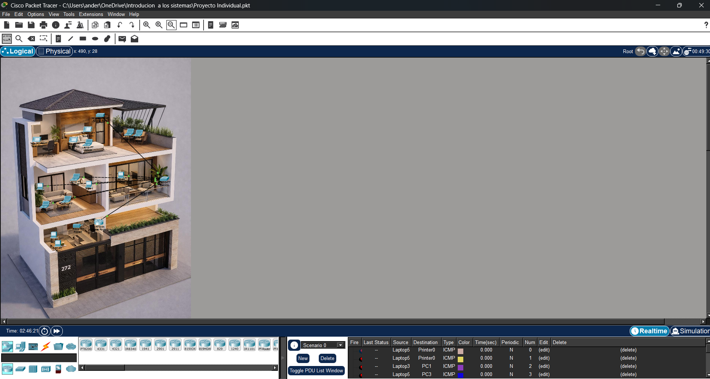
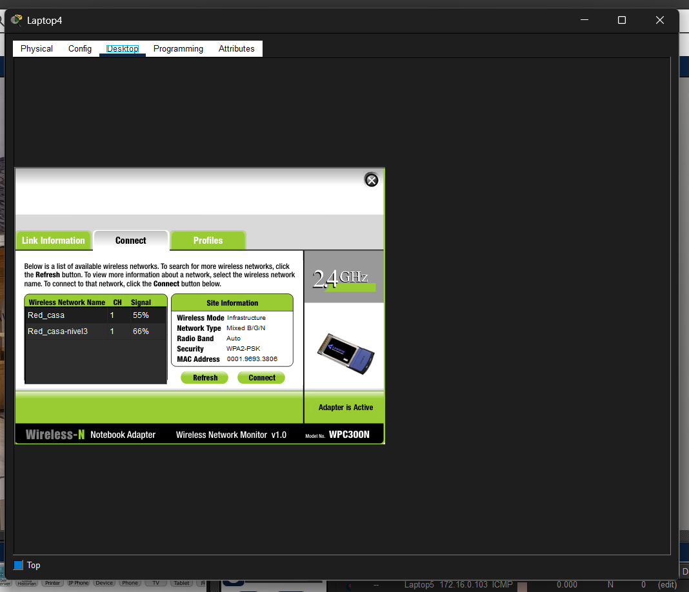

Se realiza una casa de tres pisos con cada una con diferente configuración de red.y se tiene que solucionar el problema que nos dejaron se realizan conexiones inala,bricas, con cable lan y con una cascada con un repetidor

El objetivo de este proyecto es instalar y configurar los cables de red, asegurando una comunicación efectiva y segura entre los dispositivos en una red local.

En conclusión, el proyecto de cables de red ha permitido aplicar conocimientos técnicos y habilidades prácticas para garantizar el buen funcionamiento y seguridad de la infraestructura. A través de la realización de tareas de instalación y configuración, se ha logrado identificar y solucionar problemas potenciales, mejorando la eficiencia y confiabilidad de la red. Además, la documentación del proceso ha facilitado el análisis y la mejora continua en futuras intervenciones de mantenimiento.
© 2026 Mi Portafolio. Todos los derechos reservados.